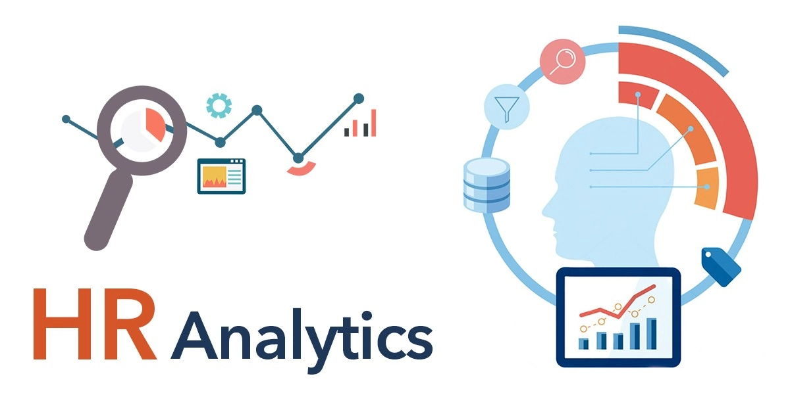

This project is focused on leveraging SQL for data exploration and utilizing Power BI for cleaning and analyzing Sales data. The primary objective is to gain insights into the overall growth of various markets by thoroughly examining the dataset. Through the use of Power BI, the project aims to analyze sales data, providing a detailed understanding of market growth trends and identifying areas of loss across different markets.

The goal of this project was to develop an interactive dashboard that provides insights into employee attendance patterns using data analytics and visualization techniques. The dataset comprises attendance records, including presence, work-from-home (WFH), and sick leave (SL) statuses, tracked over a specific period. This dashboard serves as a tool for HR departments and management to monitor attendance trends, identify potential issues, and make data-driven decisions to improve employee engagement and productivity.

The primary goal of this project was to analyse an insurance dataset to uncover valuable insights about customer demographics, policy performance, vehicle characteristics, and the effectiveness of sales channels. By leveraging SQL queries, we aimed to explore key aspects of the insurance data and gain a better understanding of customer behaviour, policy adoption, and premium distribution. The data analysis focused on investigating patterns in customer engagement, vehicle damage history, and the relationship between customer demographics and their insurance-related decisions.
The dataset included information about customer age, gender, driving license status, region codes, prior insurance, vehicle age and damage, annual premium amounts, and response rates. The analysis was carried out using MySQL queries to extract insights into customer segmentation, sales channel performance, and factors affecting insurance policy adoption.